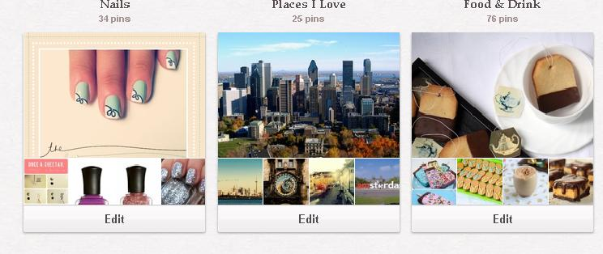
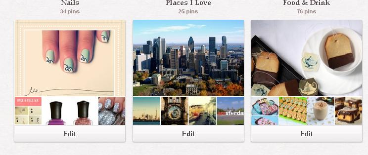

Pinterest is a virtual bulletin board on which users can post photos of their hobbies, interests and inspirations. Pinterest is available through any Internet accessible device. To join Pinterest, a user must create a profile on the website. Once the profile is created, the user can create ‘boards’, which are essentially different categories of interests. For example, one may create board titles that include ’Home Decor’, ‘Recipes’, ‘Clothing’, etc. When a board has been created, the user can begin to ‘pin’. The user can choose to either upload a photo from their computer or add a photo from a website by simply plugging in a URL. Once the photo has been uploaded, the user is a given the option of which board they would like to place the photo on, as well as giving the photo a caption. When the photo is finalized, it now has become a pin. The user can control of what they decide to post to their boards. User can begin to ‘repin’ other users’ pins by searching a key board in a certain category. The main page for Pinterest, once the user has logged in, is a collection of a user’s followers and the user’s boards they follow. Users can also 'like' pins. By liking a pin, the user does not repin a photo to their board.
The main purpose or function of Pinterest is the ability for users to share their interests with their friends. Since Pinterest is a social media website, it is meant to connect users on a global scale. Pinterest invites users to ‘follow’ other users’ boards and pins to gain even more ideas and inspiration. To find users to follow, Pinterest allows a user to access their Facebook friends. Additionally, pins can be posted to a user’s Facebook and Twitter accounts. With the promotion of pins on other social media websites, people can start their own Pinterest accounts, as well as get inventive and creative ideas. User can share their pins in a variety of different ways, whether it be on Pinterest itself or on Facebook and Twitter.
Pinterest is effective because of its mobility and organization. Since it is now common for most people to have access the Internet through their computers or mobile devices, users’ boards and pins can be taken everywhere along with them. The app for Pinterest features an option for users to take an instant photo from their mobile device, and immediately upload to it to a board. As opposed to having a thought or idea written down, it much easier to take a photo of something that is interesting, and have it easily accessible for the user. Pinterest is essentially a virtual memory board; it keeps photo documentation of a user’s interests and likes. Pinterest works because of its organization. The ability for a user to create several categorized boards lets the user keep a systemized record of all their photos. If a user is looking for a previously uploaded photo, the user will know which board to look for.
Pinterest engages users immediately. Since users have complete control of what they pin, they feel a sense of freedom and expression in what they post. A user gets hooked on the concept as soon as they start to browse other users’ boards and pins, then decide to make one for themselves. The simplicity of the website allows for past pinning, and for the user to be quickly acquainted with how the site works.
The Pinterest website is well designed. It is simple and easy to use. The background of the site is kept at a neutral colour so the colour of the users’ photos will not clash with the background. The site is mainly composed of images, with small text underneath, as the website itself is entirely dedicated to images.
One way Pinterest can be improved is by making a photo’s link more easily accessible. When a user posts a photo from another website, the link it embedded in the photo. So, when a user comes upon a pin they like, the user can click on the photo and it will lead them to a larger photo of the pin. The user has to click on the photo a second time to taken to the site where the photo is linked from. This seems like a lot of work to get to a website link. However, it used to be more difficult for users to access a link, but Pinterest has made several changes to make the link more readily available. Additionally, it would be more useful if the search bar at the top of the screen remained locked as the user scrolls down the page, as opposed to scrolling all the way back up the page to make a search.